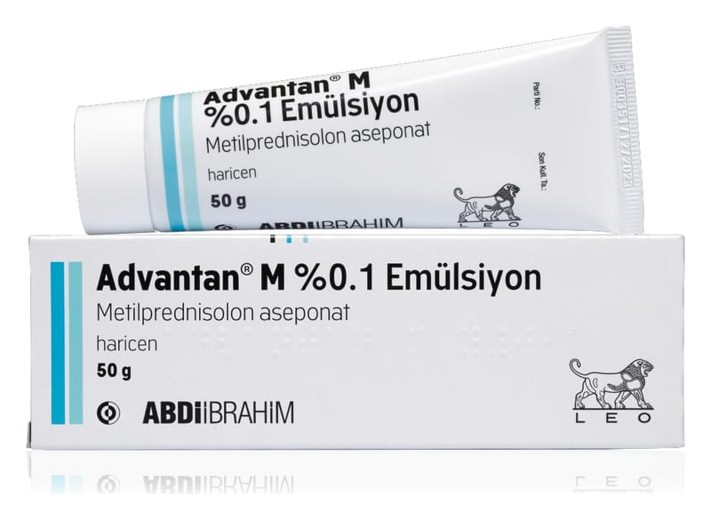

Advantan M %0,1 Emülsiyon, 50 g

Ne için kullanılır
KT · Bölüm 1• ADVANTAN, 50 g’lık aluminyum tüplerde, karton kutu içerisinde kullanıma sunulan kremdir.
• ADVANTAN iltihabi ve alerjik deri reaksiyonlarını baskılar ve kızarıklık, deri kalınlaşması, deri yüzeyinde tabaka oluşumu, ödem, kaşıntı ve diğer şikayetler (yanma hissi veya ağrı) gibi deri sorunlarından kaynaklanan belirtileri hafifletir.
• ADVANTAN; ani gelişen ekzema alerjik ve temas nedenli deri iltihabı, zehirli (toksik) hücre bozulmasına neden olan ekzema (dejeneratif ekzema), yağlı ekzema, madeni para görünümünde (numüler) ekzema, sulantılı ekzema) alerjik deri iltihabı (atopik dermatit, nörodermatit), seboreik ekzema (kızarık saha üzerinde sarı, hafifçe yağlı ve kuru kabuklar halinde görülen döküntüler), bacaklarda varise bağlı ekzema (gravitasyonel ekzema), ciddi güneş yanıklarının (solar dermatit) tedavisinde kullanılır. ADVANTAN 4 aydan büyük çocuklarda kullanılır.
Bu ilacı kullanmaya başlamadan önce bu KULLANMA TALİMATINI dikkatlice okuyunuz, çünkü sizin için önemli bilgiler içermektedir. • Bu kullanma talimatını saklayınız. Daha sonra tekrar okumaya ihtiyaç duyabilirsiniz. • Eğer ilave sorularınız olursa, lütfen doktorunuza veya eczacınıza danışınız. • Bu ilaç kişisel olarak size reçete edilmiştir, başkalarına vermeyiniz. • Bu ilacın kullanımı sırasında, doktora veya hastaneye gittiğinizde doktorunuza bu ilacı kullandığınızı söyleyiniz. • Bu talimatta yazılanlara aynen uyunuz. İlaç hakkında size önerilen dozun dışında yüksek veya düşük doz kullanmayınız.